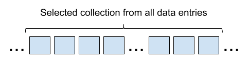

Let's say you need to display a collection that you received from the server. Usually it will come in the form of an array of objects: list of books, people, goods, etc. It’s a very common task for frontend. Actually this assignment is the main reason why we need frontend - we need to represent documents and collections in the most used way to aggregate them.
Usually presentation of a collection came with it's brother task - sorting it. And here comes the question - on which side should this sorting be done: in the browser or in the server? This question is especially legitimate for small collections, when the server just sends all of it to the browser - first of all let's see why that is.
Let's say we have a huge database - millions of data entries. There is no way we can send it all to the client in one piece. We will require the client to define some criteria and then we'll return the collection that represents these criteria.

So each time the client will get only partial data and sometimes, when a given query is too general, then the server will cut it even more. For example, it may return only the first 1000 entries. In this case we can't sort data on the client, because sorting should be part of the query and should be taken into account in the server.
The next situation is when the server indeed returns all data to the client. Usually this happens when a project is in the early stage of development and server sorting hasn't been implemented yet or a collection is small by design and shouldn't grow. In this case, sorting can be done in the client.
But even when sorting is done in the client, it doesn't mean that the default order of the items should be defined by the client. You see, the server will need to fetch data from the database anyway, it's not like it has any other choice. So if data has already been fetched by some query, why not define sorting in the same query? The client will take it from here, but the default order should be a server side problem.